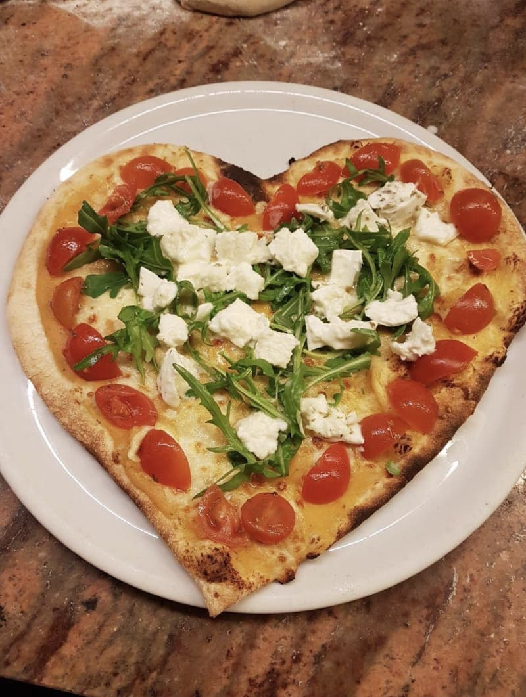
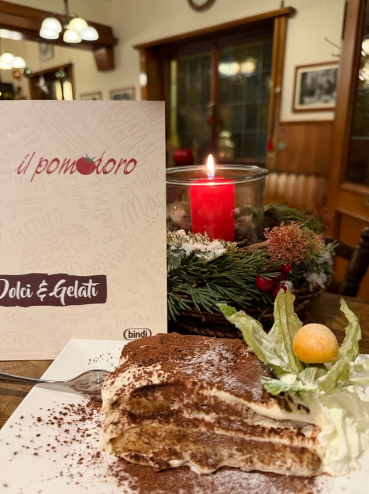
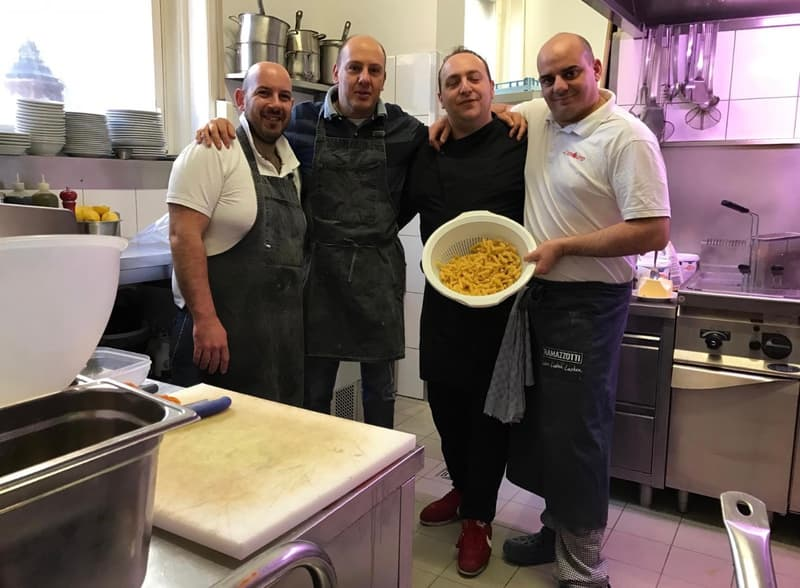
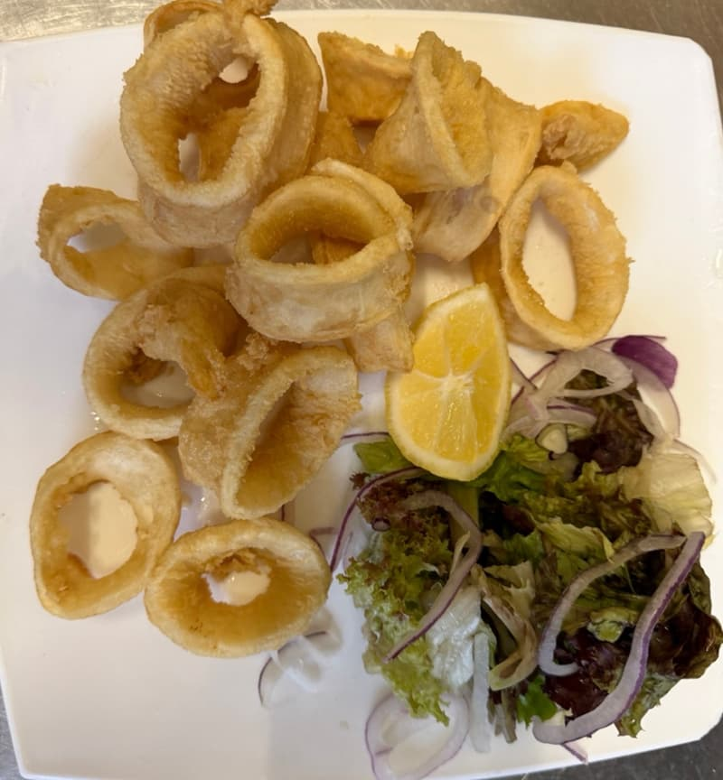
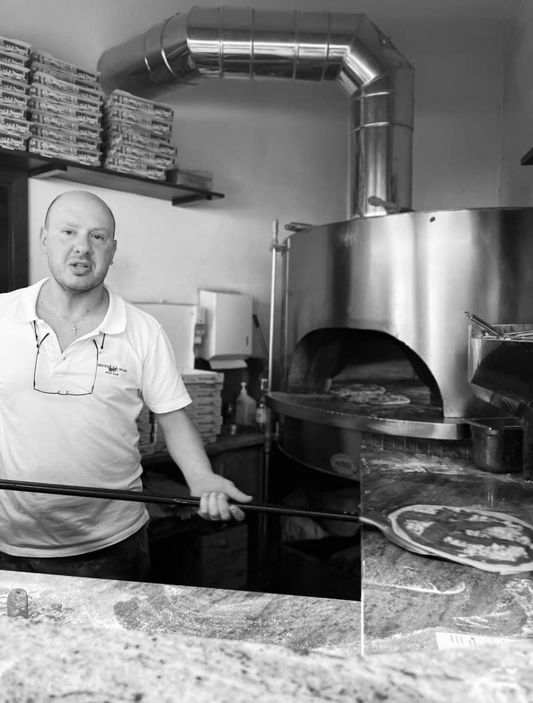
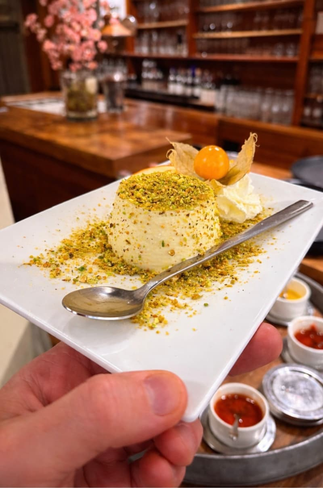

Il Pomodoro für zu Hause
Pizza aus dem Holzofen, Pasta und Dolci, frisch zubereitet und zu Ihnen geliefert. Bestellen Sie über den Lieferdienst, den Sie am liebsten nutzen.
Lieferando
Bequem online bestellen und direkt bei Lieferando bezahlen.
Bei Lieferando bestellen
Wolt
Bestellung in der App verfolgen und direkt bei Wolt bezahlen.
Bei Wolt bestellen
Sie verlassen dabei unsere Website. Für Bestellung, Bezahlung und Lieferung gelten die Bedingungen von Lieferando bzw. Wolt.
So schmeckt es auch zu Hause
Wir backen jede Pizza erst, wenn Ihre Bestellung bei uns ankommt, bei hoher Hitze im Holzofen. Dazu Pasta, Antipasti und unsere Dolci wie Tiramisù.
- Pizza und Pinsa aus dem Holzofen
- Jede Pizza auch mit glutenfreiem Boden
- Fragen zu Allergenen? 0711 51 87 66 50

Instagram
Wochenkarte und Neuigkeiten auf @ilpomodorosud
Jede Woche posten wir dort unsere neue Wochenkarte mit dem Mittagstisch. Und alles, was sonst los ist: Feiertage, Aktionen, Feiern und neue Gerichte.
- Die Wochenkarte, jeden Montag neu
- Aktionen und neue Gerichte zuerst
- Geänderte Öffnungszeiten und Ruhetage




